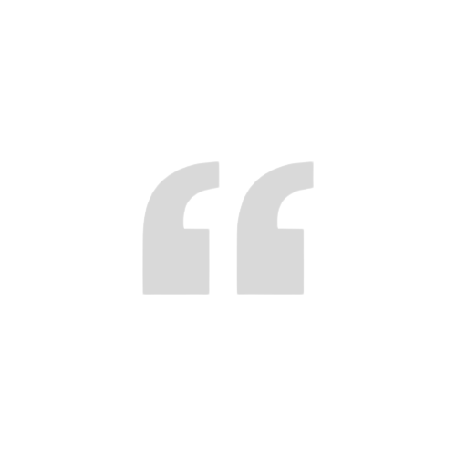

Our Testimonials

DR. B. PRIESTLY SHAN
Branch Advisor - IEEE CUSB
The institution has always emphasized students' holistic development and I am glad to observe the efforts of student volunteers who have been working tirelessly to give the same to their peers. The events and activities expose students to a wide range of experiences and inculcate qualities such as leadership and teamwork, which will be useful in their future careers.

ER. SUGANDHA SHARMA
Branch Counselor - IEEE CUSB
Needless to say, this platform will serve as a starting point for connecting with thousands of your colleagues in the fields of computer science, electrical engineering, electronics, and other allied subjects. Our student branch has grown significantly as a result of events such as the promise to promote excellence among students in relevant fields and will continue to strive in every way possible

MR. RISHABH RAJ
Corporate Mentor - IEEE CUSB
IEEE CUSB has established itself as a true communicator and facilitator among all scientific and technological communities working to improve society. Workshops in popular areas, prominent lectures, and student contests are a few of the regular activities that this branch pursues and would like to pursue with the greatest amount of zeal and expectations of success.